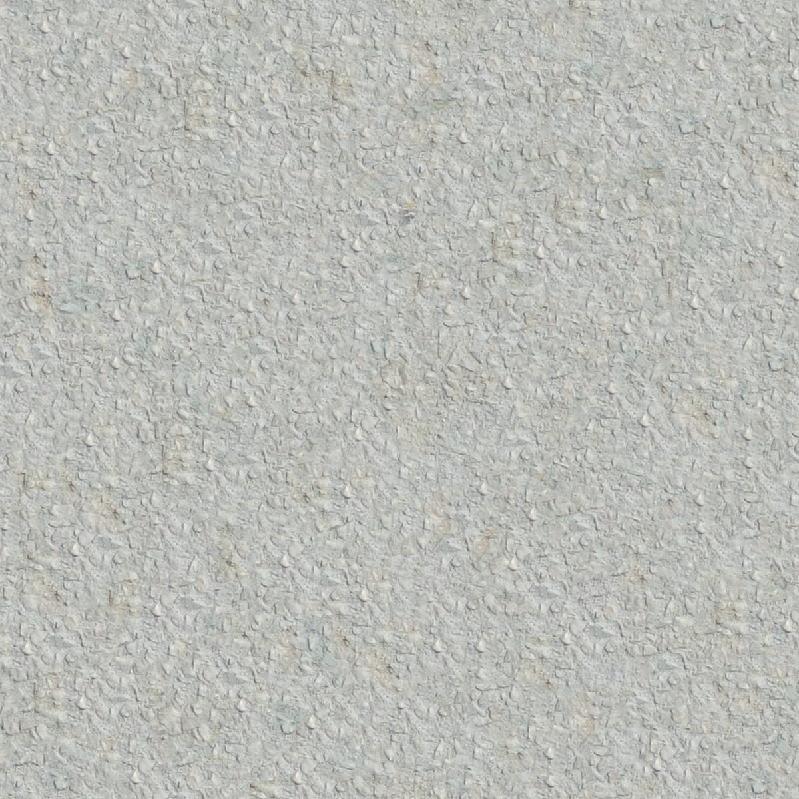
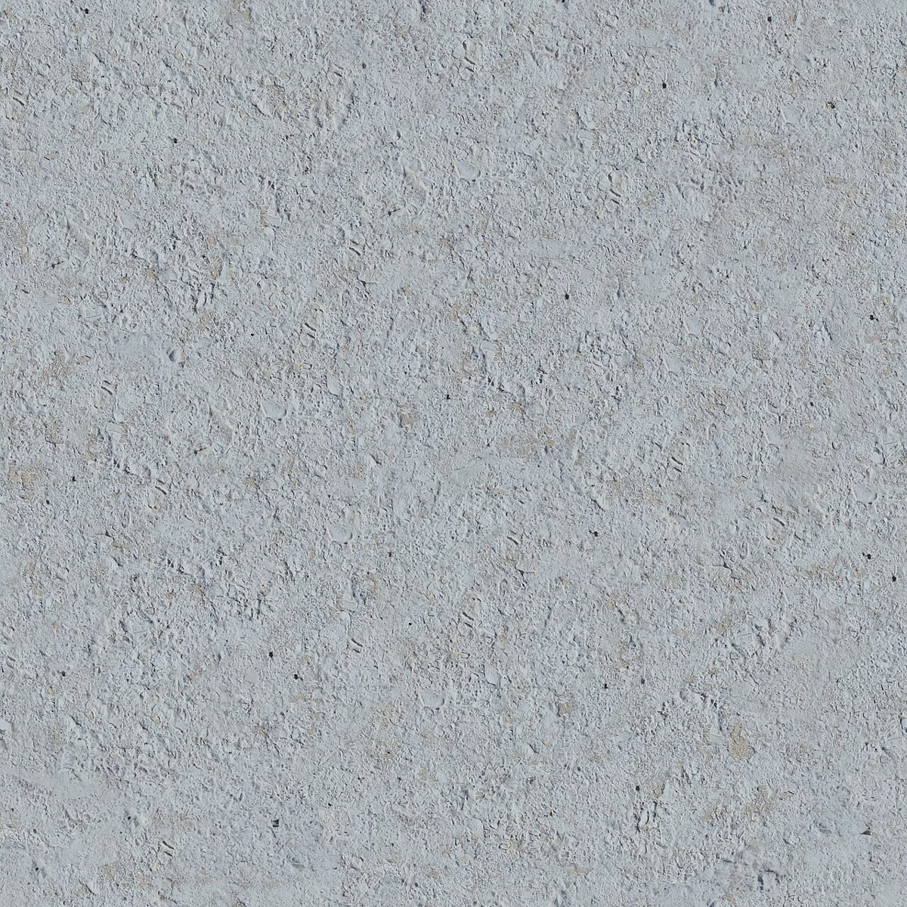
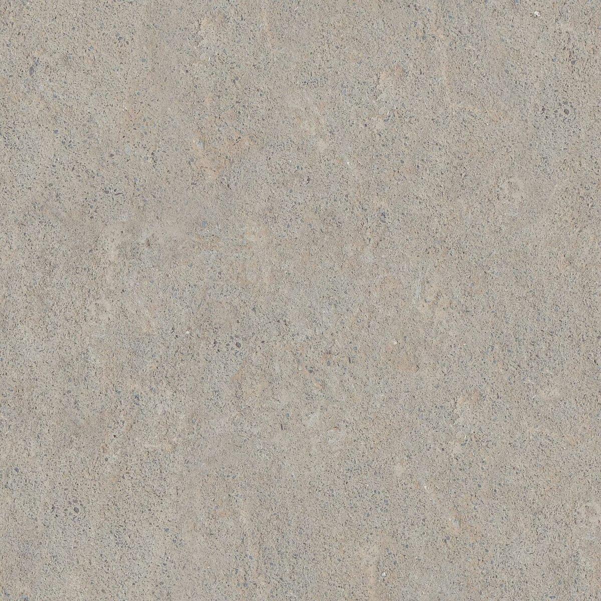
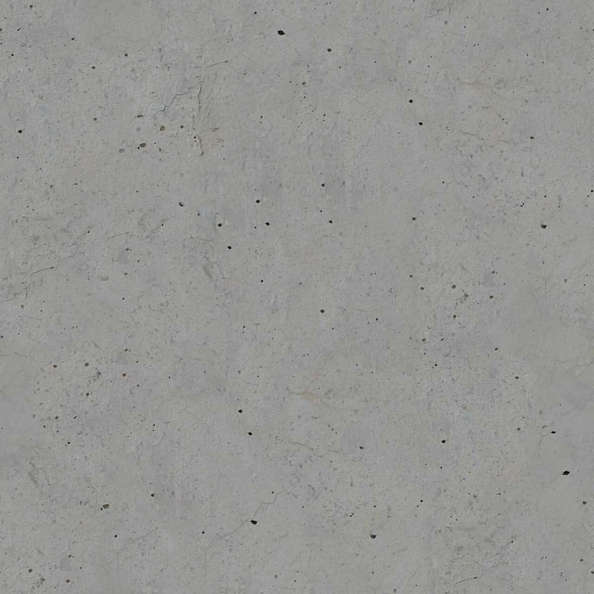
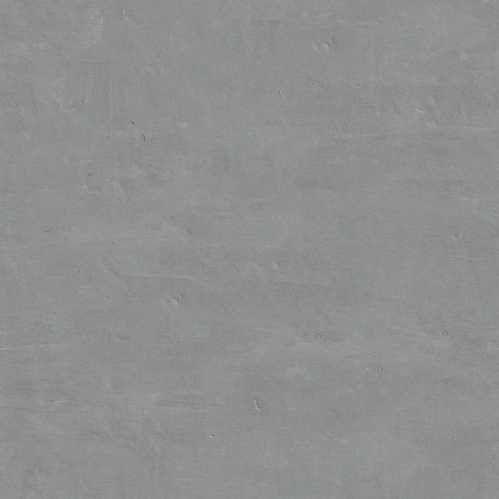

CAFE / 北海道千歳市栄町
オール
トーンズカフェ
北海道千歳市にあるカフェ「オールトーンズカフェ」のご案内ページです。営業時間やメニューなど、詳しいことは準備中。電話番号は 0123-42-5105。まずはInstagramをのぞいてみてください。

制作側の連想
「オールトーンズ」から、階調表(ステップウェッジ)
店名の由来は分かりません。制作側は「トーン」という言葉から、白から黒まで明るさを段階に並べた階調表(ステップウェッジ)を連想しました。そこでこのサイトは、灰色を明るい順に9段並べた見た目にしています。制作側の連想で、お店の理念・由来とは無関係です。
九段の階調表
明るい順に、灰色の壁を9枚。
写真は千歳市のものではありません。画面上でモノクロ表示にした、撮影地不明のフリー素材です。数字は各写真の平均の明るさ(制作側の計測)です。

1明るさ 76% 
2明るさ 73% 
3明るさ 67% 
4明るさ 66% 
5明るさ 63% 
6明るさ 59% 
7明るさ 58% 
8明るさ 56% 
9明るさ 47%
ご案内
お店のこと(確認できたものだけ)
| 所在地 | 〒066-0061 北海道千歳市栄町４丁目８ |
|---|---|
| 電話 | 0123-42-5105 |
| 営業時間 | 準備中 |
| 定休日 | 準備中 |
| ご予約 | 準備中 |
| 駐車場 | 準備中 |
| SNS | Instagram @all_tones_cafe |